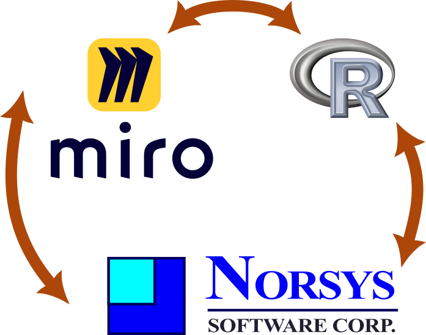
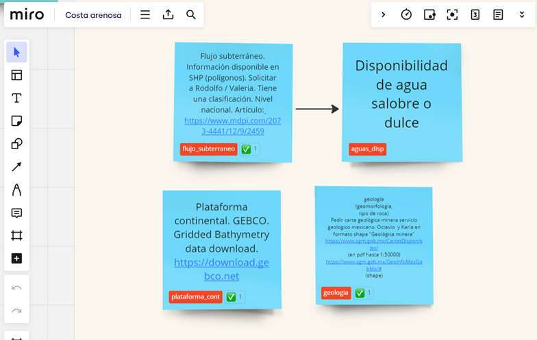

Presentar la visión integral del proyecto, su origen, fundamentos teórico-metodológico y principios de ciencia abierta, para unificar criterios técnicos entre el grupo central de trabajo e identificar en conjunto las variables potenciales para los ejercicios de modelación.
Objetivos particulares:
Presentar el proyecto, sus etapas, los productos comprometidos y tiempos estimados.
Presentar las bases teórico-metodológicas del proyecto (redes bayesianas), así como los fundamentos de ciencia abierta (FAIR).
Identificar posibles variables a utilizar en el modelaje del proyecto, así como las fuentes de datos e información relevante en dos escalas (para el nivel nacional y un caso de estudio potencial a detalle en la Península de Yucatán).
Descripción de las actividades
Los talleres realizados el 29 y 31 de mayo contaron con la participación de 14 personas que conforman el grupo núcleo de trabajo del proyecto (ocho mujeres y seis hombres, tres participando en línea), provenientes del Instituto de Ingeniería de la UNAM, el Instituto de Ecología A. C. y la UAM – Xochimilco. Las listas de participantes se encuentran en este Archivo.
El taller se realizó con un enfoque participativo, para lo cual, se preparó un pizarrón digital en la plataforma virtual Miro y las presentaciones fueron depositadas en el sitio Web de trabajo para el proyecto. El instrumento de planeación del taller (carta descriptiva) con la propuesta de actividades detalladas se encuentra en el anexo 2.
A continuación, se presentan la descripción del desarrollo de las actividades durante los tres días de trabajo.
3.1 Día 1
Bienvenida y presentación
Al inicio del taller, el Dr. Octavio Pérez Maqueo dio una breve bienvenida al taller e informó que cada día se iba a pasar una lista de asistencia; además, se le pidió a cada persona señalar si brindaban su consentimiento libre e informado para el uso de imagen e información considerando la siguiente leyenda: “Al marcar esta celda, usted da el consentimiento para que el proyecto ‘Estimación de la integridad ecosistémica de las costas arenosas mexicanas a través de técnicas de aprendizaje de máquina (CF-2023-G-1497)’ haga uso de materiales (fotos/videos) con su imagen, así como de la información derivada de los días de taller. Ninguna información privada o sensible será utilizada ni compartida fuera del marco del proyecto. Muchas gracias.” (Ver listas en el anexo 1)
Posteriormente a la información de la lista y consentimiento, se invitó a cada participante a presentarse brevemente con su nombre e institución.
2. Presentación del contexto y origen del proyecto
El Dr. Pérez Maqueo desarrolló una presentación en torno a la pregunta ¿por qué creemos que es necesario un proyecto como este? Para ello, la exposición contó con los siguientes componentes:
Visión integral
Caso particular de las costas
Desarrollo de habilidades
¿Cómo sugerimos hacerlo?
Co-construcción
Ciencia Abierta y principios FAIR
Análisis con base en propuesta del SEEA EA
Flujos de trabajo (pipelines)
En esta primera presentación se destacaron algunos argumentos de la necesidad que dio origen al proyecto:
Fortalecer iniciativas nacionales e internacionales que vemos como una alternativa viable hacia la sustentabilidad.
Desarrollar metodologías que nos permitan a nosotros u otras personas rehacer mañana el análisis que hicimos hoy.
Aprender sobre nuevas formas de análisis dada la capacidad de datos y cómputo actuales.
Analizar a los socioecosistemas de manera integral incorporando las dependencias espaciales que caracteriza a estos sistemas.
Implementar los resultados del proyecto en la toma de decisiones.
En la segunda parte de la mañana del día 1, se expusieron las generalidades del proyecto, el marco conceptual, los compromisos establecidos para las tres etapas del proyecto, presupuesto, avances y tiempos estimados.
El objetivo principal del proyecto es “integrar indicadores bióticos y abióticos en un índice de integridad ecosistémica, a través de un modelo causal bajo una aproximación de Inteligencia Artificial Interpretable (IAI)”:
Nacional
Incorporar la complejidad asociada a ecosistemas costeros
El resultado principal es proponer una metodología para analizar la integridad ecosistémica de las costas arenosas de México, con el fin de incorporarla a las cuentas nacionales de ecosistemas y promover su uso en distintos instrumentos de política pública.
La entrega de la primera etapa del proyecto es el día 27 de junio de 2024, por lo que dentro de los acuerdos se establecieron las tareas y responsables para cumplir plenamente con los compromisos (ver tabla de acuerdos, anexo 3).
Posteriormente, el Dr. Miguel Equihua brindó un panorama de los fundamentos teóricos en los que se sustenta el proyecto, principalmente explicando el proceso de análisis de interdependencias condicionadas a partir de las redes bayesianas (directed acyclic graph- DAG sensu (Pearl & Mackenzie, 2018)) (ver blog:
En la presentación se destacó la importancia de hacer la ciencia reproducible, lo que es un DAG, su anatomía, la terminología básica (noto, arista, variable explicativa, respuesta, ancestros, descendientes), las reglas de independencia condicional y la separación condicional. Después del planteamiento teórico, se explicó cómo se busca construir el DAG de integridad costera. Finalmente se presentó el fundamento de la ciencia abierta y los principios FAIR.
De esta manera, las/os participantes reconocieron las bases del proyecto y su propuesta de desarrollo. Al terminar la exposición hubo un breve espacio para algunas dudas o inquietudes, incluyendo a las personas que atendieron en línea.
Presentación de la estrategia metodológica
La siguiente presentación buscó que el grupo cuente con la información base de la estrategia metodológica del taller, la cual sirvió también para realizar el ejercicio planeado para el día 2 de trabajo, en el cual se identificaron las variables y fuentes de información. La presentación contó con los siguientes elementos:
De lo conceptual a lo analítico (de Miro a Nética)
Enfoque causal y probabilístico
Documentación y gestión de datos
A lo largo del día se plantearon diversas inquietudes, por ejemplo:
Definir las fronteras del área de estudio.
Definir si el grupo estaba en posibilidades de un estudio de caso a profundidad en la Península de Yucatán.
Considerar si se considerará información de la cuenca a nivel superficial y/o a los acuíferos.
Definir la temporalidad, qué años y si se toman las dos temporadas para las costas.
Necesidad de llegar a las resoluciones espaciales para la información a nivel nacional y para un estudio de caso.
Además, se enlistó la información que podría ser relevante y algunas fuentes de datos que debían retomarse:
Las imágenes que se usaron para el inventario de humedales, que tiene imágenes desde el 75 u 83 y del 2005-2006. Consultar a CONABIO.
Las imágenes de los vuelos que tiene INEGI y/o SEMARNAT.
Biblioteca de imágenes de ICA, donde incluso se cuenta con vuelos de los años sesenta (aerofotos).
Acervo de la compañía mexicana de aerofoto, que se había depositado en el Instituto de Geografía-UNAM, sin embargo, como no estaban cuidados los rollos, ICA se los llevo. Los tiene la Fundación ICA.
Las fotografías aéreas más antiguas que tomaron los EE. UU., las cuales están escaneadas. El equipo de Rodolfo Silva tiene acceso a esta información. Una parte ya está digitalizada, pero no toda está organizada, hay mucho trabajo pendiente.
Información de la CFE.
Las cartas geológico-mineras de todo el país. Los tiene el servicio geológico mexicano
El equipo facilitador tomó notas cada día de trabajo de estos puntos para llegar a definiciones en una tabla de acuerdos al final del taller (ver anexo 3).
Al final del día 1, se dio un espacio en plenaria de cierre de la jornada de trabajo y se propusieron los mecanismos de interacción para el día 2.
3.2 Día 2
Presentación del tema gestión de datos y presentación de variables
Al inicio del día 2, se continuó con el tema de gestión de datos y se presentaron las temáticas de variables existentes y nuevas variables, así como las sugerencias para documentar y gestionar datos en el marco del proyecto.
Posteriormente se brindó un ejemplo de variables y sus interacciones. De esta manera, el grupo conoció la metodología específica para definir variables e interacciones.
Ejercicio participativo de identificación de variables
Construcción colaborativa de Redes Bayesianas
Se explico a propuesta de usar Miro como plataforma de debate y construcción de consenso. Buscamos así aproximarnos a la estructura causal que vincula las variables que determinan la condición y la sustentabilidad (social, económica y ambiental). También se explicó que se transferirá lo acordado en Miro a la plataformas de análisis estadístico R. Al hacer esto las posibilidades analíticas se potencian muy ampliamente y se podrá recurrir a dagitty o incluso utilizar Python y Netica para el análisis, entrenamiento y proyección del modelo resultante que es uno de los objetivos centrales del proyecto. El ciclo de trabajo en esta etapa se ilustra en la siguiente figura.

Mecánica del ejercicio:
Una vez que se introdujo al grupo de trabajo a la metodología de identificación de variables, se realizó un ejercicio donde el grupo participó a través de notas digitales tipo post-it en un pizarrón digital en la plataforma Miro (ver Fig. 1). Para esto, el equipo facilitador había preparado previamente el pizarrón de trabajo, se propusieron variables que ya se habían identificado, además de presentar el ejemplo de un caso que se desarrolló en un proyecto previo.

Definir los parámetros técnicos para el intercambio de información entre el equipo de trabajo (resolución, formato, metadatos, etc.).
Resultados generados:
Mural digital con la lista de variables potenciales identificada por el grupo de trabajo, la cual incluye fuente de datos, la escala de información y la persona que propuso la variable y que podría gestionar el acceso a la información.
Lista de fuentes de información adicionales que puedan servir como insumo para el modelaje.
Tabla de acuerdos con tareas y responsables para la siguiente fase del proyecto.
A continuación se muestra el avance de lo anotado en Miro y el resultado de transferirlo a R. En primer lugar se ilustran los atributos generales de lo que se ha definido en Miro y que ya ha sido transferido e interpretado en R como un DAG.
if (!require(miro2bayes)){library(devtools)install_github("equihuam/miro2bayesNet", force =TRUE)}library(miro2bayes)library(bnlearn)library(bnviewer)library(tidyverse, quietly =TRUE, warn.conflicts =FALSE)library(flextable)tableros <-miroBoards(servMiro ="costas", user ="miguel")tableros[, c("name", "id")]
name id
1 Costa arenosa uXjVKB6PRSY=
2 Education Plan Apps & Integrations uXjVPZCsPUo=
3 Education Plan Administration uXjVPZCsPVc=
4 Education Plan Useful Resources uXjVPZCsPVQ=
5 Education Plan Basics uXjVPZCsPDE=
Miro board origin: Costa arenosa
Is it a TRUE DAG?: Graph is acyclic
Number of sticky notes: 46
Nodes without var: 4
Number of linked nodes: 15
Duplicated nodes: 0
Number of arcs: 13
Well connected arcs: 13
Numb. Loose arcs: 0
Duplicated arcs: 0
Finalmente, se muestra la lista de variables identificadas hasta ahora en las notas reunidas en Miro y transferidas a R.
text
var
color
potencia de la ola (datos horarios 1940-2022) https://confluence.ecmwf.int/display/CKB/ERA5%3A + data + documentation
pot_ola
blue
mareas Mareografos de Pafícico y Atlántico (SEMAR) RODOLFO
mareas
blue
forma de crecimiento de vegetación de dunas:Tomar de base de datos de Ileana/conabio. Zonas con arbustivas tienden mayor erosión. en zonas como dice marisa eso no pasa
habito
dark_green
disponinibilidad de arena -ancho playa
ancho_playa
dark_green
geología(geomorfología,tipo de roca)Pedir carta geológica minera servicio geologico mexicano. Octavio y Karla en formato shape "Geológica minera" https://www.sgm.gob.mx/Cartas Disponibles/ (en pdf hasta 1:50000) https://www.sgm.gob.mx/Geo Info Mex Gob Mx/#(shape)
geologia
blue
Arrecifes de coral-Buscar la mejor capa: blaqueamiento, Copernicus o Conabio https://simar.conabio.gob.mx/explorer/?undefined
Flujo subterráneo. Información disponible en SHP (polígonos). Solicitar a Rodolfo / Valeria. Tiene una clasificación. Nivel nacional. Artículo: https://www.mdpi.com/2073-4441/12/9/2459
flujo_subterraneo
blue
Sol. WB_Global solar atlas. https://globalsolaratlas.info/map?c=19.248922,-97.171326,9&s=19.519781,-96.911168&m=site
radiacion
blue
Evapotraspiración En terminos de germinación y cobertura
evapotranspiracion
dark_green
NOTAS GENERALESJuntaremos playa y duna como un solo ecosistema. Sugerencia de Rodolfo
notas_1
gray
Plataforma continental. GEBCO. Gridded Bathymetry data download. https://download.gebco.net
plataforma_cont
blue
Infraestructura
infraestruct
orange
Manglares SIMARPaty Moreno
mangle
dark_green
Estructuras marinas
estruct_marina
orange
Influencia antrópica
influ_antro
orange
ALTERACIONES ANTROPICAS DE LA Calidad del agua
alt_antro
orange
Pendiente de la playa Información puntual Mónica y otros
pendiente
dark_green
Diámetro mediano D50(base de datos GICP-IIUNAM)
d50
blue
Redondez sedimento. (base de datos GICP-IIUNAM)
redondez
blue
Dirección de la línea de costa con relación al oleaje y al viento Usar línea de costa propuesta por Rodolfo
dir_costa
blue
Efecto del sargazo
EfectoDelSargaso
violet
Corrientes Marinas Atlas de corrientes IMTA de Efraín Mateos (Base de datos del CEMIE)VALERIA
corrientes_m
blue
Especies invasoras Usar datos procesados por Julián
invasoras
dark_green
Perfil de suelo Perfiles edafológicos se pueden encontrar en: https://www.inegi.org.mx/app/biblioteca/ficha.html?upc=702825266707 Suelos sueltos y poco compactados son más susceptibles a la erosión eólica, lo que facilita la formación de dunas. Por otro lado, suelos más compactos pueden resistir mejor la acción del viento. La presencia de diferentes horizontes en el perfil edafológico puede afectar la disponibilidad de sedimentos para la formación de dunas. Un horizonte superficial arenoso es ideal para la movilización de partículas.
Estacionalidad fuente: copernicus. posprocesar para ver también temporada de secas - VALERIA - Marisa proporciona el criterio
secas
blue
Condición
condicion
green
Precipitación- fuente: copernicus. posprocesar para ver también temporada de secas VALERIA
lluvia_anual
blue
Gasto Escurrimiento en cuenca Aporte de sedimento terrígeno
gasto
blue
dirección de la ola (datos horarios 1940-2022) https://confluence.ecmwf.int/display/CKB/ERA5%3A + data + documentation
dir_ola
blue
velocidad del viento (datos horarios 1940-2022) https://confluence.ecmwf.int/display/CKB/ERA5%3A + data + documentation Suelos sueltos Encontrar umbrales de viento y ver si favorecen la construcción o la destrucción de duna. ¿Velocidad de inicio de arrastre? WB_Atlas eólico mundial: https://globalwindatlas.info/es/PENDIENTE DEFINIR UMBRALES
vel_viento
blue
dirección del viento (datos horarios 1940-2022) https://confluence.ecmwf.int/display/CKB/ERA5%3A + data + documentation
dir_viento
blue
Detección
inf_2
dark_green
Contexto
inf_1
blue
Otro
inf_4
violet
Intervención hunama
inf_3
orange
Humedad En terminos de germinación y cobertura
humedad
dark_green
Checar pagina de idea del instituto de geografía https://www.gits.igg.unam.mx/idea/descarga Gaby Gómez
notas_2
gray
Tasa de desplazamiento(Erosión- / acresión + )
-
dark_green
erosibilidad
erosibilidad
green
Resolución raster100 m por lado (equivalete a 3 segundos) En versión "caso de estudio" serán pixeles de 10m por lado (equivale a 0.3 segundos).
resolucion
cyan
Ale:Presencia de especies indicadoras sensibles a cambios en la costa:
-
dark_green
Aves marinas: chorlos Audubon society y Conell
-
dark_green
Sitios de anidación de tortugas marinas
-
dark_green
Pearl, J., & Mackenzie, D. (2018). The book of why: the new science of cause and effect. Basic books.